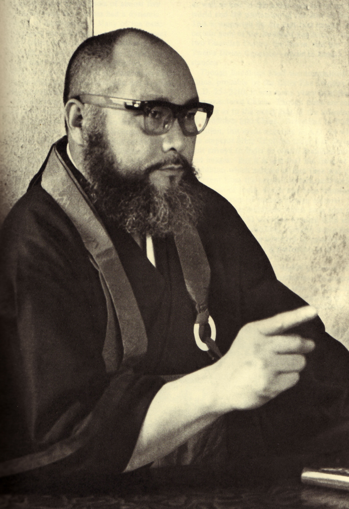

Kontak
lbh.surya.ntt@gmail.com

@lbh_surya_ntt
Alamat
Jln. Amanuban, Oebufu Kayu Putih, Kupang, NTT
LBH SURYA NTT
Dojo LBH SURYA NTT didirikan di Kupang, Nusa Tenggara Timur sebagai dojo resmi Shorinji Kempo. Sejak awal berdiri, dojo ini berkomitmen pada disiplin, kebersamaan, dan pengembangan karakter. Pendiri dojo adalah tokoh lokal yang berperan besar dalam memperkenalkan Shorinji Kempo di wilayah timur Indonesia.

So Doshin | Pendiri Shorinji Kempo
Shorinji Kempo adalah seni bela diri asal Jepang yang menggabungkan goho (teknik pukulan/tendangan), juho (teknik kuncian/lemparan), dan seiho (penekanan titik tubuh untuk kesehatan). Filosofi utamanya adalah Ken Zen Ichinyo – tubuh dan pikiran adalah satu. Shorinji Kempo bukan hanya bela diri, tetapi juga jalan hidup untuk membentuk manusia yang kuat dan berkarakter.
| Hari | Waktu |
|---|---|
| Sabtu | 16:00 - 18:00 |
| Minggu | 16:00 - 18:00 |
Latihan rutin ini bertujuan membentuk fisik, mental, dan kebersamaan para kenshi.
Catatan: Jadwal bisa saja berubah apabila adanya kegiatan tambahan seperti tanding atau ujian demi persiapan materi.
| Nama Kejuaraan | Tanggal | Lokasi | Keterangan |
|---|---|---|---|
| Kejuaraan Nasional Shorinji Kempo | Agustus 2026 | Jakarta, Indonesia | Event resmi tingkat nasional |
Kejuaraan Provinsi NTT 2024
Kejuaraan Nasional 2025
Kejuaraan Kota Kupang 2023
Kejuaraan Asia Tenggara 2022
Kejuaraan Asia Tenggara 2022
Kejuaraan Asia Tenggara 2022
Kejuaraan Asia Tenggara 2022
Kejuaraan Asia Tenggara 2022
Kejuaraan Asia Tenggara 2022
Kejuaraan Asia Tenggara 2022
Kejuaraan Asia Tenggara 2022
Kejuaraan Asia Tenggara 2022
Kejuaraan Asia Tenggara 2022
lbh.surya.ntt@gmail.com
@lbh_surya_ntt
Jln. Amanuban, Oebufu Kayu Putih, Kupang, NTT
LBH Surya NTT meraih 15 medali (4 emas, 8 perak, 3 perunggu) di Piala Bupati Cup IV, November 2025.
Baca selengkapnyaDojo Surya NTT memborong 20 medali dalam Kejuaraan Kempo antar dojo se-Kota Kupang, Juni 2025.
Baca selengkapnyaLBH Surya NTT Perwakilan Lembata gelar rapat program bantuan hukum gratis tahun 2026.
Baca selengkapnyaDojo LBH Surya NTT ditetapkan sebagai pusat latihan resmi Shorinji Kempo di Kupang.
Baca selengkapnyaHerry F.F. Battileo melepas mahasiswa magang dengan pesan moral tentang hukum dan nurani.
Baca selengkapnyaLBH Surya NTT Lembata menangani kasus kredit macet Kopdit Obor Mas, Maret 2026.
Baca selengkapnyaProgram sosialisasi hukum kepada siswa SMP dan SMA di Lembata untuk cegah pelanggaran hukum.
Baca selengkapnyaAtlet LBH Surya NTT diproyeksikan ikut PON XXII 2028 mewakili NTT.
Baca selengkapnyaProgram pembinaan karakter melalui Shorinji Kempo di Kupang.
Baca selengkapnyaLBH Surya NTT Lembata menangani sengketa tanah masyarakat, Maret 2026.
Baca selengkapnyaTim beregu dojo LBH Surya NTT meraih juara di kategori Embu Beregu Campuran.
Baca selengkapnyaKenshi LBH Surya NTT meraih juara di kelas Randori putra dan putri.
Baca selengkapnyaDojo Surya NTT aktif mendukung program PERKEMI NTT dalam pembinaan atlet.
Baca selengkapnyaLatihan bersama antar dojo di Kupang untuk persiapan kejuaraan nasional.
Baca selengkapnyaDojo LBH Surya NTT sering diberitakan media lokal sebagai dojo aktif dan berprestasi.
Baca selengkapnya